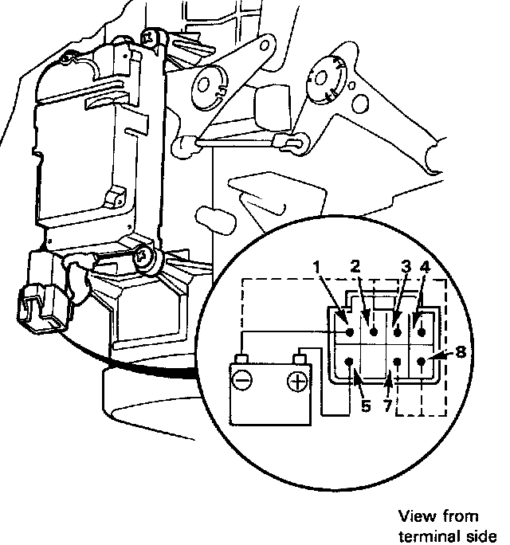

Function Control Motor
Function Control Motor
1. Connect the battery positive terminal to the 5 terminal of the function control motor and negative to the 1 terminal.
2. Using jumper wire short the 1 terminal individually to the 2, 3, 4, 7 and 8 terminals to follow the order.
^ The motor should run each time the short circuit is made.